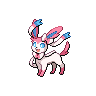

Sylveon appears on 231 of 1702 Pokémon Champions VGC tournament teams in the backtwo archive (14% usage, Reg M-A and Reg M-B). The most common item is Fairy Feather (91% of Sylveon sets) and the most common ability is Pixilate. Its most frequent teammate is Garchomp (52% of its teams).
Open Sylveon in the full app →| Team | Player | Event | Result | Reg | Date |
|---|---|---|---|---|---|
| ryu_poke197's PJCS 2026 Champion Team (Seniors) | ryu_poke197 | PJCS 2026 | Champion (Seniors) | M-A | 8 Jun 2026 |
| kim0227poke's PJCS 2026 Top 16 Team | kim0227poke | PJCS 2026 | Top 16 | M-A | 7 Jun 2026 |
| k_moou's PJCS 2026 Top 16 Team | k_moou | PJCS 2026 | Top 16 | M-A | 7 Jun 2026 |
| gahaku's PJCS 2026 Top 16 Team | Masahiro Ito | PJCS 2026 | Top 16 | M-A | 7 Jun 2026 |
| Porygon222222's PJCS 2026 Top 16 Team (Seniors) | Porygon222222 | PJCS 2026 | Top 16 (Seniors) | M-A | 7 Jun 2026 |
| Makoto_PTCGL's PJCS 2026 Top 32 Team | Makoto_PTCGL | PJCS 2026 | Top 32 | M-A | 7 Jun 2026 |
| tuna_pokemon's PJCS 2026 Top 32 Team | tuna_pokemon | PJCS 2026 | Top 32 | M-A | 7 Jun 2026 |
| yuuichi_u1's PJCS 2026 Top 64 Team | yuuichi_u1 | PJCS 2026 | Top 64 | M-A | 7 Jun 2026 |
| Francesco Pio Pero's Turin SPE 2026 Top 16 Team | Francesco Pio Pero | Turin SPE 2026 | 11th | M-A | 7 Jun 2026 |
| José Francisco Gálvez's VR June Challenge Champion Team | José Francisco Gálvez | VR June Challenge | Champion | M-A | 7 Jun 2026 |
| PsychoR&R's Charizard-Y Aerodactyl Team | PsychoR&R | - | — | M-A | 8 Jun 2026 |
| AtrixMJ's Indianapolis Regional 2026 Top 8 Team | Michael Rogers | Indianapolis Regional 2026 | 7th | M-A | 2 Jun 2026 |
Showing 12 of 231 teams. See all 231 in the full app →
Already running Sylveon and want the rest of the six? The team finder takes the Pokémon you have and ranks every tournament team by how many of your picks it matches. Or run the numbers in the damage calculator — Champions-accurate, with Mega Evolution, Stat Points, weather, terrain and spread reduction.